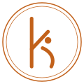
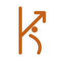

The spirit of the old mark, made current.
The original logo was chosen by Gail's niece. Its heart is the little figure inside the k: the curve of the letter and a dot above it form an "i", the i of insight and awareness. These three directions keep that figure and let the arrows go, or keep just one.
 Kinetic InsightsKinetic Insights
Kinetic InsightsKinetic InsightsA · The figure
The k and its dot, drawn in one clean line. Closest to the original, quietest on the page. In use on this staging site.

B · The seal
The same figure in a fine double ring. Soft contemporary with a touch of the antique, in the spirit of the Royal Shakespeare Company rebrand.

Kinetic InsightsC · One arrow
Of the three rising arrows, one remains, built into the arm of the k. The most kinetic of the three.
The rising line used across the site is the same idea as a graphic motif: one arrow instead of three, in Gail's orange.